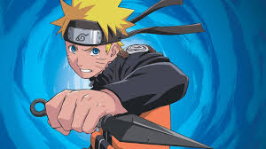

The best anime of all time!

Naruto (ナルト) is a Japanese manga series written and illustrated by Masashi Kishimoto. It tells the story of Naruto Uzumaki, a young ninja who seeks to gain recognition from his peers and also dreams of becoming the Hokage, the leader of his village. The story is in two parts, the first set in Naruto's pre-teen years, and the second in his teens. The series is based on two one-shot manga by Kishimoto: Karakuri, which earned Kishimoto an honorable mention in Shueisha's monthly Hop Step Award the following year, and Naruto.